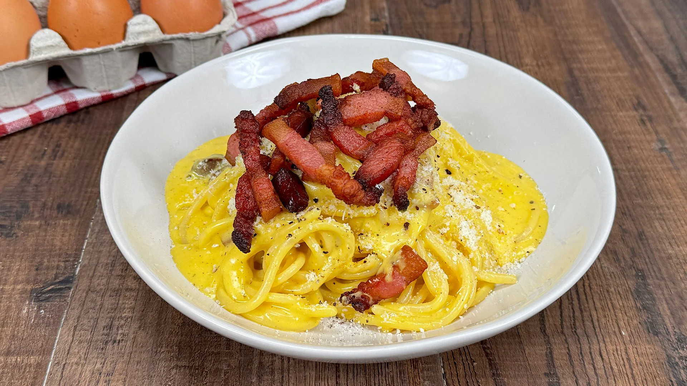
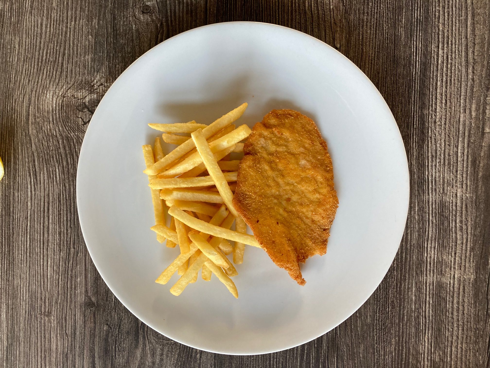
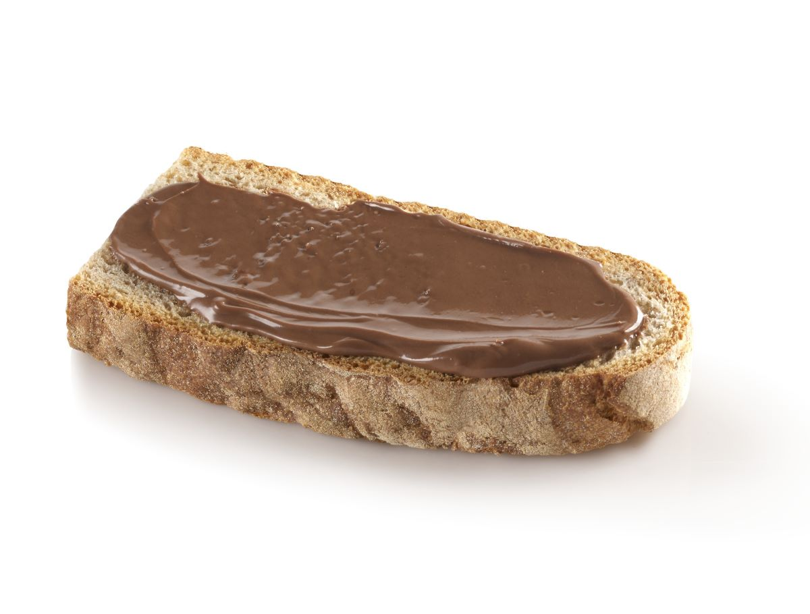

Scopri le ricette che ti renderanno una vera baddie
Le CamillaRicette
Pasta al pomodoro 🍝
Ricetta tradizionale della Camilla
Cucina italiana base, quella che “la fa anche mia nonna senza guardare”.
No vabbè raga questa è ICONICA.
Cioè torni da scuola, butti su la pasta, metti il sugo e sei già a posto per la vita.
Metti l’olio, l’aglio che fa pshhh (oddio che profumo), pomodoro, sale e basta.
Il basilico sopra perché sì, perché sono curata.
Se non ti piace… cioè ok ma io la mangio lo stesso.
Ingredienti
Pasta (spaghetti o penne, quello che trovi)
Passata di pomodoro
Olio d'oliva
1 spicchio d'aglio
Sale
Basilico
ParmiGiano
Fun fact
È la pasta che mangio quando dico “non ho fame” ma poi la finisco tutta.
Se avanza, la mangio anche fredda il giorno dopo e dico che è pure più buona.
Carbonara
La mia prefe ❤️

Servita caldissima, crema ovunque, pepe che ti pizzica il naso.
Porzione abbondante perché tanto non la rifai domani.
Raga questa è pesante ma troppo buona. Cioè la fai una volta e ti senti subito grande.
Guanciale che frigge, uova con il formaggio, pepe a caso.
La pasta dentro e giri veloce perché se no diventa uovo strapazzato e ti viene da piangere.
Se qualcuno dice “mettiamo la panna?”
No amore, stai zitta.
Ingredienti
Pasta
Guanciale
Uova
Pecorino romano
Pepe nero
Sale (pochissimo)
Fun fact
Ogni volta dico “ne mangio poca” e poi mi alzo dal tavolo con il bottone slacciato.
È la pasta che faccio quando voglio dimostrare che so cucinare davvero.
Cotoletta e patatine
Servita direttamente nel piatto grande,
patatine buttate lì senza ordine.
La cotoletta è più grande del piatto, leggermente unta, perfetta.

Classico italiano da casa, quello che mangiano tutti e non stanca mai.
Questa è proprio sabato sera a casa.
Leggings, felpa larga, MTV acceso.
La cotoletta croccante che fa rumore quando la mordi, patatine accanto perché senza non ha senso.
Limone sopra se ti senti sofisticata (rarissimo).
Mangiarla sul divano = momento sacro.
Ingredienti
Fettine di carne (pollo o vitello)
Uova
Pangrattato
Sale
Olio per friggere
Patate
Limone (obbligatorio)
Ketchup o maionese (se nessuno guarda)
Fun fact
La mangio sempre guardando la TV.
Se qualcuno mi parla mentre mastico mi dà fastidio, è un momento mio.
Pane e nutella
Merenda italiana eterna, patrimonio culturale non scritto.

Pane spezzato a mano, Nutella spalmata spessa, servito su tovagliolo di carta. Latte freddo nel bicchiere trasparente.
Raga io con questo ci sono cresciuta.
Altro che dolci strani.
Pane aperto, Nutella spalmata spessa, che quasi cola.
Latte freddo nel bicchiere, sorso dopo ogni morso.
Fine.
Silenzio.
Serotonina.
Ingredienti
Pane
Nutella
Latte freddo
Fun fact
È la cosa che mangio quando sono triste, annoiata o quando non so cosa mangiare.
Funziona sempre.
Sempre.